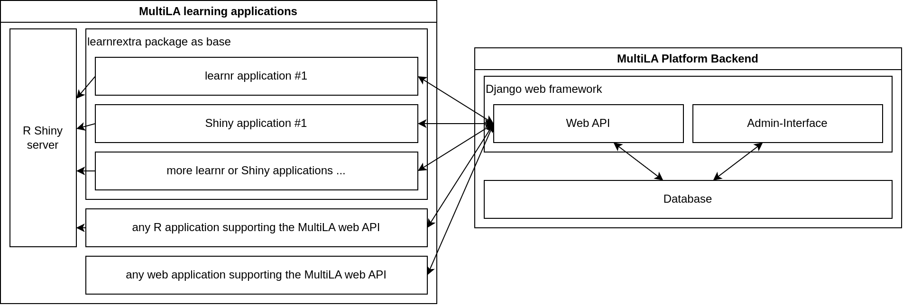

Extending the MultiLA software platform¶
This part of the documentation represents the development guide for all components of the MultiLA software platform. The chapter starts with an overview of the components and how they communicate with each other. Then, development and deployment of the different components is discussed.
Overview of the software components¶
The following image show an overview of the MultiLA platform components:
{kind=link}
the web API is central and provides a common platform for setting up client applications, configuring and sharing them, and tracking user data and feedback
all data – user generated or operational – is stored in the database
only the web API service has direct access to the database – client applications cannot access the database directly
for learnr and Shiny based client applications, there is a package learnrextra that provides all necessary (JavaScript) code to interact with the web API and to make client applications configurable
this allows to quickly create several client applications that share the same code for interfacing with the web API and that can be configured in some details (e.g. including/excluding certain sections, aesthetic changes, etc.)
the R Shiny server doesn’t communicate with the MultiLA web API, only the JavaScript code on the client side implements the communication
in general, any (web) application can use the MultiLA web API, which means for example R Shiny applications or Jupyter Notebook applications
it is possible to connect external services for authentication (e.g. Moodle)
Code repositories overview¶
Web API and database: https://github.com/IFAFMultiLA/webapi
learnrextra R package: https://github.com/IFAFMultiLA/learnrextra
learning applications (using learnrextra):
TestgenauigkeitBayes (Bayes’ Theorem applied to medical testing): https://github.com/IFAFMultiLA/TestgenauigkeitBayes
Wahrscheinlichkeitsverteilungen (probability distributions): https://github.com/IFAFMultiLA/Wahrscheinlichkeitsverteilungen
basic learnrextra test application in RMarkdown/learnr https://github.com/IFAFMultiLA/learnrextra_testapp
basic learnrextra test application in Shiny https://github.com/IFAFMultiLA/learnrextra_testapp_shiny
basic learnr test application with Python https://github.com/IFAFMultiLA/learnr_py
scripts for preparing and analysing collected tracking data: https://github.com/IFAFMultiLA/TrackingDataScripts
this documentation: https://github.com/IFAFMultiLA/ifafmultila.github.io
Client-server communication¶
The client-server communication happens on the basis of a RESTful web API implemented in the WebAPI repository and the main implementation is in api/views.py. The API exposes an OpenAPI schema under the URL http[s]://<HOST>/openapi when settings.DEBUG is True.
Client-server communication flowchart¶
an application session may either require a login or not – this can be configured in the administration backend for each application session as “authentication mode”
all API endpoints except for
session/andsession_login/require an HTTP authorization token, a.k.a “user token”, even when no login is requiredthis makes sure that each request to the API is linked to a user – either to a registered user (when a login is required) or to an anonymous user that is only identified with a unique code (when no login is required)
Without login (“anonymous”):
doesn’t require an account
user authentication is based on a user token that is generated on first visit and then stored to cookies for re-use

With login:
requires that the user has registered an account with email and password
{kind=link}
Application configuration¶
to each application, a configuration can be passed when starting the application session
the API sends the configuration as JSON object after the initial session request (anonymous session) or after log in (session that requires login) – this is displayed as
app_configkey in the above figureson the client side, the learnrextra R package handles reading the configuration and setting up the application accordingly
the application configuration JSON object has the following format and options:
{ "exclude": [<HTML element IDs to exclude>], "js": [<additional JavaScript files to load>], "css": [<additional CSS files to load>], "feedback": <bool>, # enable/disable specific user feedback features "summary": <bool>, # enable/disable displaying summary "tracking": { # enable/disable specific tracking features "mouse": <bool>, # mouse tracking w/ mus.js "inputs": <bool>, # tracking of input changes "attribute_changes": <bool>, # tracking of attribute changes "chapters": <bool> # tracking of switching betw. chapters } }
Development of MultiLA platform components¶
This section shows how to set up your local development environment for working on the MultiLA platform components.
General requirements and setup¶
The development setup has been tested on Ubuntu Linux but should work on other Unix based platforms (like MacOS) without problems. Windows may require more effort, but should also work. It’s necessary to have recent versions of pandoc and Docker (for the WebAPI) installed on your system and it’s recommended to have installed make.
It’s recommended to put all components of the MultiLA platform in one folder on your machine. We will refer to this folder as multila/. The recommended structure of this directory is as follows:
apps/ – contains all learning applications
learnrextra/ – R package from https://github.com/IFAFMultiLA/learnrextra
TrackingDataScripts/ – tracking data preparation & analysis from https://github.com/IFAFMultiLA/TrackingDataScripts
webapi/ – MultiLA Web API from https://github.com/IFAFMultiLA/webapi
You should clone the git repositories that you need into the respective folders. The following section describe how to get the respective components working on your machine so that they interact with each other just as on a server.
WebAPI¶
The MultiLA web API collects the tracking data from the learning applications. It also provides an administration interface for registering learning applications, setting up experiments and managing tracking data. It’s based on Django and the Django REST framework.
Relevant documentation parts in used frameworks¶
Django:
Models and databases (tutorial / topic guide)
Views (tutorial / topic guide)
Automated admin interface (tutorial / documentation)
Testing (topic guide)
Django REST framework:
Requirements¶
Docker with Docker Compose v2 (recommended: run Docker in rootless mode)
all you need is to install the Docker Engine for your operating system (Docker Desktop is optional)
it is recommended to set up Docker in rootless mode if your operating system supports it
Python 3.11 if not running the web application in a Docker container
Initial setup¶
After cloning the repository, it’s recommended to create a Makefile that contains shortcuts for important terminal commands that allow you to manage and deploy the project. You can use the following template for the Makefile:
COMPFILE := docker/compose_dev.yml
COMP := compose -f $(COMPFILE)
EXEC := $(COMP) exec web
EXECDB := $(COMP) exec db
SERVER := <SERVER FOR DEPLOYMENT>
APPDIR := <DIRECTORY ON SERVER FOR DEPLOYMENT>
SERVER_APP := $(SERVER):$(APPDIR)
RSYNC_COMMON := -rcv --exclude-from=.rsyncexclude
NOW := date -Is | sed "s/://g" | cut -d+ -f 1
up:
docker $(COMP) up
down:
docker $(COMP) down
build:
docker $(COMP) build
create:
docker $(COMP) create
enter:
docker $(EXEC) /bin/bash || echo "web container is not running"
superuser:
docker $(EXEC) python manage.py createsuperuser || python src/manage.py createsuperuser
djangoshell:
docker $(EXEC) python manage.py shell || python src/manage.py shell
migrations:
docker $(EXEC) python manage.py makemigrations || python src/manage.py makemigrations
migrate:
docker $(EXEC) python manage.py migrate || python src/manage.py migrate
dump:
docker $(EXEC) python manage.py dumpdata -o /fixtures/dump-`$(NOW)`.json.gz || python src/manage.py dumpdata -o data/fixtures/dump-`$(NOW)`.json.gz
dbbackup:
docker $(EXECDB) /bin/bash -c 'pg_dump -U admin -F c multila > /data_backup/local_dev_multila-`$(NOW)`.pgdump'
collectstatic:
docker $(EXEC) python manage.py collectstatic || python src/manage.py collectstatic
test:
docker $(EXEC) python manage.py test api || python src/manage.py test api
sync:
rsync $(RSYNC_COMMON) . $(SERVER_APP) && ssh $(SERVER) "mv $(APPDIR)/Makefile_server $(APPDIR)/Makefile"
testsync:
rsync $(RSYNC_COMMON) -n . $(SERVER_APP)
adminer_tunnel:
ssh -N -L 8081:localhost:8081 $(SERVER)
server_restart_web:
ssh $(SERVER) 'cd $(APPDIR) && make restart_web'
You should also create a second Makefile, named Makefile_server, that will be copied to the server on deployment and contains management commands to be run on the server:
COMPFILE := docker/compose_prod.yml
COMP := compose -f $(COMPFILE)
EXEC := $(COMP) exec web
EXECDB := $(COMP) exec db
NOW := date -Is | sed "s/://g" | cut -d+ -f 1
up:
docker $(COMP) up -d
logs:
docker $(COMP) logs -f
down:
docker $(COMP) down
restart_web:
docker $(COMP) restart web
build:
docker $(COMP) build
create:
docker $(COMP) create
enter:
docker $(EXEC) /bin/bash
migrate:
docker $(EXEC) python manage.py migrate
check:
docker $(EXEC) python manage.py check --deploy
test:
docker $(EXEC) python manage.py test api
superuser:
docker $(EXEC) python manage.py createsuperuser
copy_static:
cp -r static_files/* /var/www/api_static_files/
dbbackup:
docker $(EXECDB) /bin/bash -c 'pg_dump -U admin -F c multila > /data_backup/multila-`$(NOW)`.pgdump'
There are two ways to set up a local development environment: either by using a Python virtual environment (venv) on the local machine to run the Python interpreter or by using a Python interpreter inside a Docker container. The latter is currently harder to set up in conjunction with an IDE.
Option 1: Using a venv on the local machine¶
create a Python 3.11 virtual environment and activate it (e.g. via
python3 -m venv venvin the project root directory and then activating it viasource venv/bin/activate)install the required packages via pip:
pip install -r requirements.txtcreate a project in your IDE, set up the Python interpreter as the one you just created in the virtual environment
copy
docker/compose_dev_db_only.ymltodocker/compose_dev.ymlstart the docker services for the first time via
make upor via your IDE’s docker interfacenote: the first start of the “web” service may fail, since the database is initialized in parallel and may not be ready yet when “web” is started – simply starting the services as second time should solve the problem
optional: create a launch configuration for Django in your IDE
start the web application using the launch configuration in your IDE or use
python src/manage.py runserver
Option 2: Using a Python interpreter inside a docker container¶
copy
docker/compose_dev_full.ymltodocker/compose_dev.ymlcreate a project in your IDE, set up a connection to Docker and set up to use the Python interpreter inside the
multila-webservicefor set up with PyCharm Professional, see here
start all services for a first time
note: the first start of the “web” service may fail, since the database is initialized in parallel and may not be ready yet when “web” is started – simply starting the services as second time should solve the problem
alternatively, to manually control the docker services outside your IDE, use the commands specified in the Makefile:
make createto create the containersmake upto launch all services
Common set up steps for both options¶
when all services were started successfully, run
make migrateto run the initial database migrationsrun
make superuserto create a backend admin userthe web application is then available under
http://localhost:8000a simple database administration web interface is then available under
http://localhost:8080/adminto check if everything works, you should run
make test
learnrextra R package setup¶
The learnrextra R package is a central part of the MultiLA software platform. It’s an extension to the learnr to create learning applications that allow to anonymously track usage data and collect this data via the web API. It furthermore provides some extra features to learnr such as an optional summary panel and the ability to create several variants of a single base learning application via configurations.
For local development, it’s recommended that you clone this repository on your machine. Then, either create a new learning application as explained in “Creating learning applications” or use the test application. However, make sure that you install learnrextra in your learning application from the local path of the cloned repository (renv::install("<LOCAL PATH TO REPOSITORY>")).
Installation¶
install renv if you haven’t yet
then install all R dependencies via
renv::restore()run “Check” in the RStudio “Build” panel to check if R package building works
also install NodeJS and the Node package manager (npm)
then run
npm installto install all JavaScript dependenciesrun
npm run buildto check if building the JavaScript sources works
Project structure¶
Folder inst/rmarkdown/templates/tutorial:
template for creating new learning applications
sub-folder
resourcescontains main JavaScript code, additional CSS and HTML
Folder learnrextra-js:
contains JavaScript code for additional custom packages that need to be built locally (see section below)
sub-folder
formatcontains JavaScript code for thetutorialobjectsub-folder
musjscontains JavaScript code for a modified variant of the musjs project
Folder R:
contains R code for the few functions that this packages exposes
Building custom JavaScript packages¶
Every time you change JavaScript code for one of the custom JavaScript packages in the learnrextra-js folder, you need to re-build these packages via npm run build. The built code is then automatically copied to inst/rmarkdown/templates/tutorial/resources.
Building the documentation¶
To build the documentation for the R functions of this package, you need to run the R command devtools::document().
Translations¶
learnrextra at the moment only supports English and German. You can add support for more languages by editing inst/rmarkdown/templates/tutorial/resources/translations.json.
Custom data protection and tracking consent notes in any language can be added by following “Data protection and tracking consent notes.”
Learning application setup¶
You should create a new learning application according to the chapter “Creating learning applications”. You must however make sure that you install the learnrextra package from the local path that you used in “learnrextra R package setup.” For example, when you cloned the learnrextra package in the directory multila/learnrextra and create a new learning application under multila/apps/myapp, then you should install learnrextra in the learning application myapp via renv::install("../../learnrextra") so that it uses a relative path that points to multila/learnrextra.
After creating a basic version of your new learning app, you should try out that the tracking works locally on your machine. First, make sure that the web API is up and running on port 8000. Then, register a new learning application along with an application configuration and an application session. This learning application will be launched locally on your machine and will be running on http://localhost:8001/. Details on how to register an application are explained in the section “Registering a learning application with the MultiLA administration backend.”
Next, make sure that the local web API endpoint is also set as target API server in the learning application’s frontmatter as apiserver: http://localhost:8000/ (see “Frontmatter options”). Then, start your learning application locally on the fixed port 8001 (by default RStudio will always use a different free port). You can do so by running the following command in R:
rmarkdown::run("<RMARKDOWN_DOCUMENT>.Rmd", shiny_args = list(port = 8001, launch.browser = FALSE))
When you created the application session in the MultiLA administration interface, an URL with an unique session identifier was created such as http://localhost:8001/?sess=xyz. Visit this URL with a browser while the web API and the learning application are running. This should start the learning application and, after giving consent, also start a tracking session. You can check that a tracking session was created and tracking data is being collected by navigating to Data manager > Tracking sessions in the MultiLA administration interface (see “Monitoring user tracking”). If no tracking session was created, check the JavaScript console in the learning application for errors.
Reloading changes during local development¶
When developing a new learning application, you can simply rebuild and relaunch the learning application with the command above when you want to review your changes. If you make changes to the learnrextra package code however, more effort is needed: First, you may need to rebuild JavaScript packages as explained in “Building custom JavaScript packages”. Then, you will need to re-install the package in your learning application before you rebuild und relaunch it. A shortcut for that may be written in a Makefile like so:
devserver:
-rm <RMARKDOWN_DOCUMENT>.html
R -e 'renv::install("<LOCAL_PATH_TO_LEARNREXTRA_REPO>");rmarkdown::run("<RMARKDOWN_DOCUMENT>.Rmd", shiny_args = list(port = 8001, launch.browser = FALSE))'
You can then use make devserver to automatically re-install learnrextra from the local repository and relaunch the learning application.